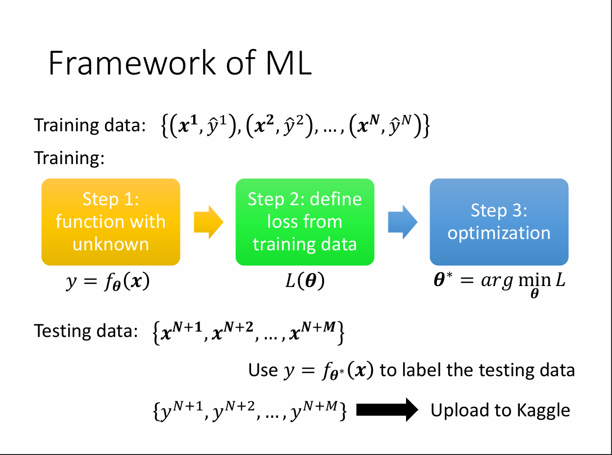
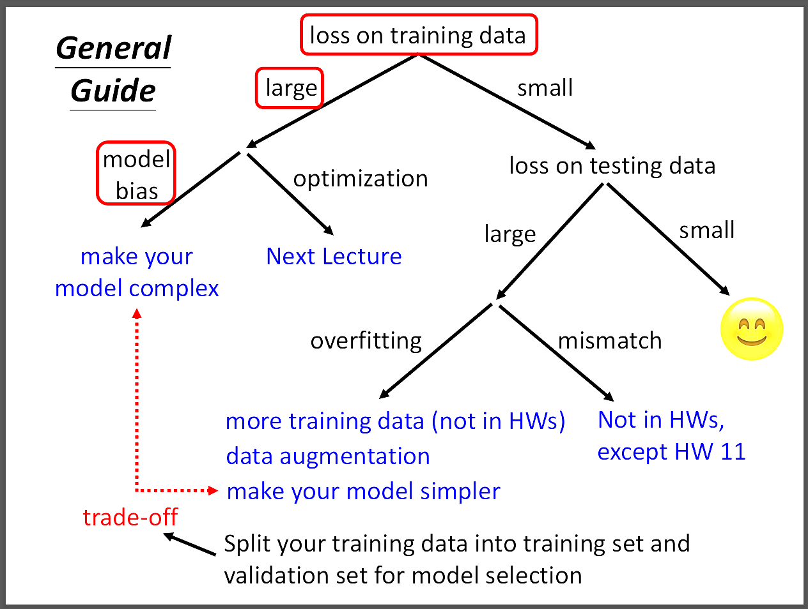
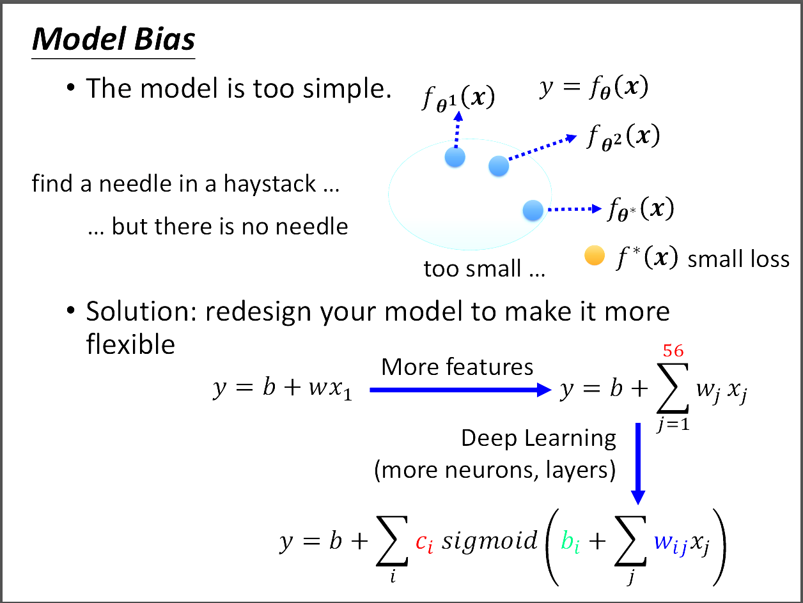
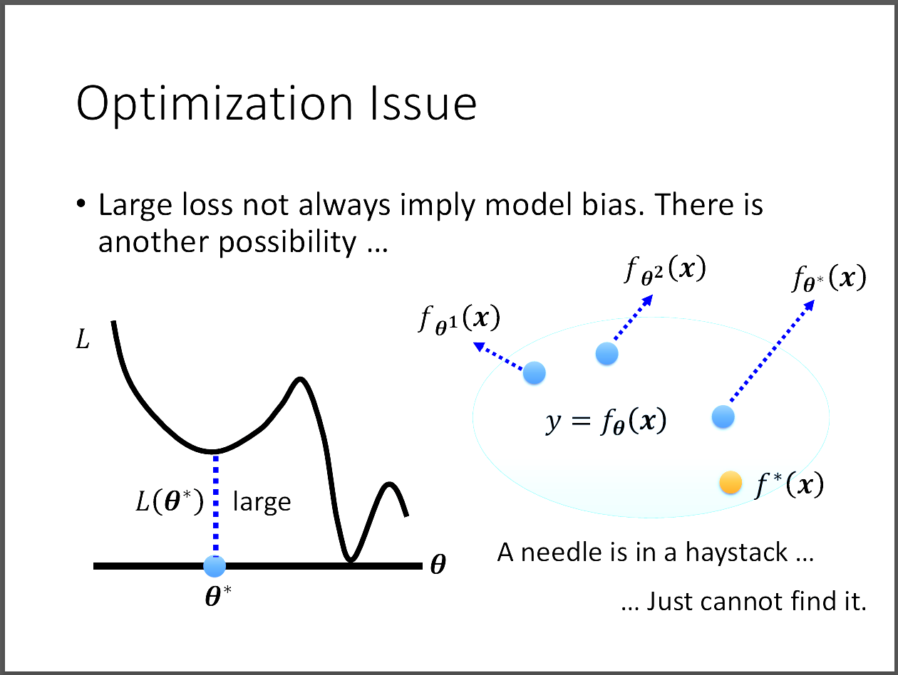
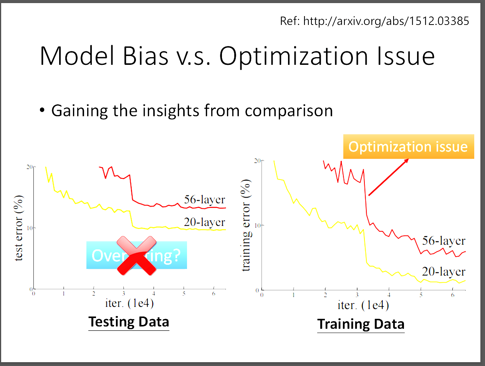
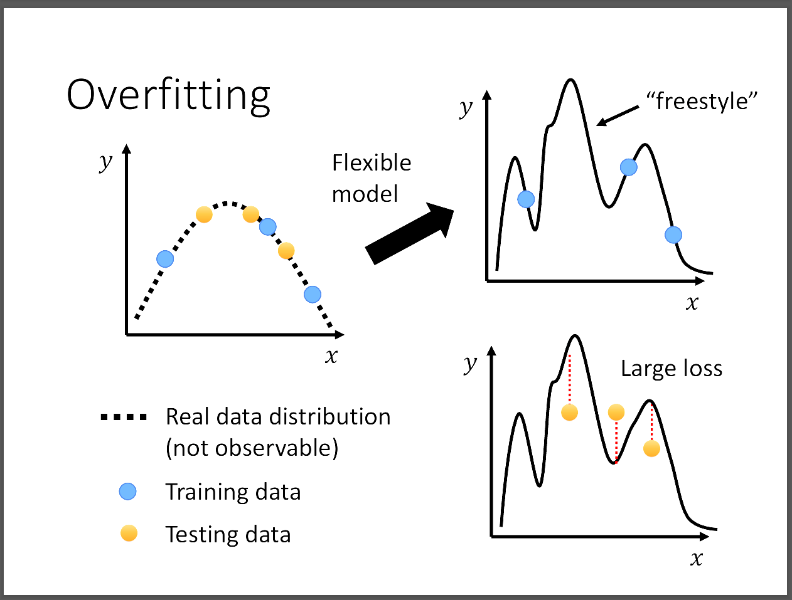
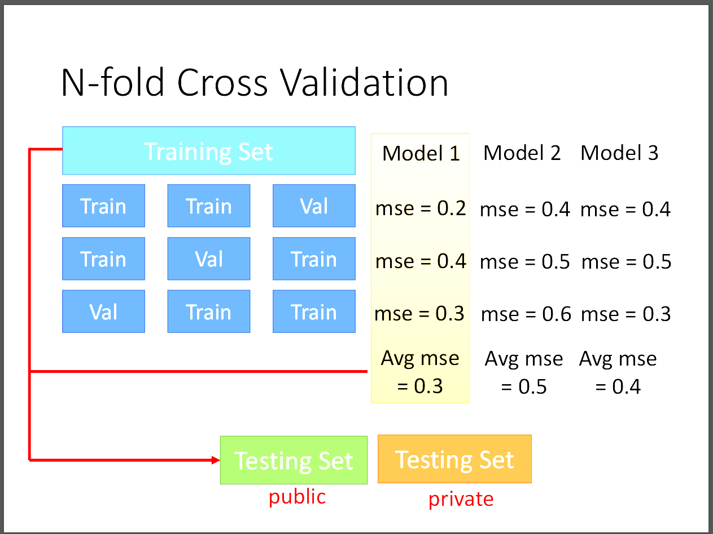

台大教授李宏毅老師[機器學習概論2021][機器學習任務攻略]
📘 文章探討
1️⃣機器學習訓練步驟與架構
2️⃣Model Bias v.s. Optimization Issue
3️⃣Overfitting是甚麼以及可以怎麼解決
4️⃣Reference
1️⃣ 機器學習訓練步驟與架構

Step1:建立一個未知參數θ的function
Step2:利用這個function在training data上算Loss
Step3:調整function的參數θ以求得最低的loss

上圖說明在訓練過程中遇到的各種情況應該怎麼處理。
2️⃣Model Bias v.s. Optimization Issue

這張圖說明什麼是Model Bias?當我們在訓練集上的Loss始終很大時，
我們可以往Model Bias的方向思考。Model Bias是說明你設計的Model太小，
不夠包含最佳的Loss Function。此時我們應該要設計一個更大更複雜的Model，
(可以增加更多的features，或用Deep Learning架構)才有機會包含到最佳的Loss Function。

但是不一定每一次遇到training loss很大的時候都一定是Model Bias造成的，
另一個可能的問題是Optimization Issue。也就是當我們用Gradient Descent去做Optimization時，
模型可能會卡在local minimum，而始終無法到達最佳解，即使此時模型的大小已經夠了。
因此我們就會懷疑到底是哪種問題導致模型在training data上的表現很糟?

這裡老師舉了一個residual network的例子，畫面中顯示residual network在大的模型表現反而差，
相反的在模型小的表現下卻比較好。由此可推得此時應該是Optimization problem。
3️⃣Overfitting是甚麼以及可以怎麼解決
Overfitting就是只在training data上表現很好，但是在testing data上表現奇差。
尤其是在模型巨大的時候，因為複雜的模型可以很好的學習到training data的特徵，
但是容易在遇到沒看過的data上面表現不好。然而，這不足以代表這樣就是overfitting，
有可能是另一個問題，mismatch。
*mismatch是指說訓練資料跟測試資料的分布不同，資料出問題而不是模型出問題。
增加training data是一個很好的方法，但若是取得資料不易，那可以採取data augmentation。
也就是把圖片翻轉、灰階等圖片處理方法來增加data數量。
或是利用我們對資料的理解，給模型添加一些限制，不要那麼flexible。
可以用更少的參數、*共用參數(CNN會講解)、早停、正則化、Dropout。
但是若一不小心給Model過多的限制，可能會導致Model太小而形成Model Bias。

有一個方法可以增加同時在training/testing data上都表現很好。
就是把training data分成N等分，其中的N-1⁄N當成訓練資料，
再把剩下的一等分當成validation set，這個驗證集可以當作testing data，
在把模型用在testing data之前先在validation set上做測試，
反覆做N次得到最佳的模型，以此來解決Overfitting的問題。